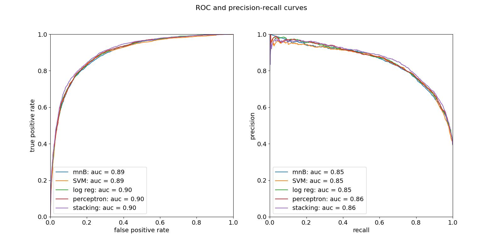

About the models
This app uses machine learning to estimate the probability that a YouTube video will get over 50k views from the title and description as well as the channel name and video category. I created and tested a total of 34 different machine learning models and the app shows the results of five of them.
How it works
The models use
natural language processing in combination with
statistical learning to generate their predictions. Natural language processing is a set of techniques that can convert written text (like what you're asked to enter in the text fields above) into numerical data that can be processed and analysed by a computer. The text is broken up into small elements known as
tokens -- whole words, parts of words (e.g. suffixes), symbols, numbers and punctuation -- and then the features of the text are compared with the vocabulary that the models learnt when they were trained on metadata from over 30,000 published YouTube videos. We look at individual tokens (e.g. 'video'), as well as clusters of two ('this video') or three tokens ('watch this video'), and count how many times the same token or group of tokens appears in the text sample. By stacking the count of all of the terms in the vocabulary, a sample of text can be represented by a vector -- a series of numbers representing the count of each distinct unit appearing the vocabulary -- which can be visualised as a single point living in a space consisting of millions of dimensions, with each dimension corresponding to a token or group of two or three tokens. Imagine one dimension representing the word 'cat', another representing 'dog', another representing 'cats and dogs,' etc. To the millions of dimensions associated with the text data, the model also adds sixteen more, one for each available video category, so it can improve its prediction with a bit more knowledge about the video. We can refer to all of this video metadata as
features and the abstract high-dimensional space as
feature space.
Since the models have already seen so many video descriptions, video titles and channel titles, and they know how many views the corresponding videos have gotten, they can see that the videos can be roughly separated into two classes -- the highly and not-so-highly-viewed -- and get an idea about where these classes live in the feature space. When you get an idea for a new video, and type the title, description, the name of your channel and the video category you're thinking of into the forms above, it converts all of these features into a single point in the feature space and it can guess whether or not your video will be highly viewed or not based on where it is located. (In the training data, I found that about 60% of videos had less than 50k views and 40% had more, so I chose the milestone of 50k views as a strictly machine-learning definition of "highly" or "not-highly" viewed.) When the models were tested on a set of 6333 videos that they had never seen during training, they were correct more than four times out of five.
How do the models use the "location" of a single point in an abstract high-dimensional space to make a prediction? The models used by the app use five different approaches:
- Multinomial naive Bayes: Bayes' theorem tells us how to get the probability of a video getting a lot of views, given its features, from the probability that a video will have those features, given that it has a lot of views. Since both the features and the views are known for the training data, the models already know what features typically occur in highly viewed videos. Naive Bayesian models assume that the features are independent and use a specific kind of probability distribution in combination with Bayes' theorem to estimate the probability that the video belongs to a certain class.
- Support vector machine: this model tries to find a boundary between the classes in feature space and then fits a hyperplane to separate them. The probability of a text belonging to a certain class relates to its distance from the boundary hyperplane and which side of the hyperplane it is on.
- Logistic regression: this model tries to estimate the probability of a video belonging to a class by find a weight-vector -- a direction in which the class changes rapidly in feature space -- and combining with the sigmoid function. The weight vector is found using maximum likelihood estimation (minimisation of the binary cross-entropy).
- Perceptron: like logistic regression, this model relies on calculating a weight-vector, but uses a sharp step function instead of a sigmoid.
- Stacking classifiers: these combine several models by using their predictions as input to a final model, called the meta-classifier. I chose logistic regression as a metaclassifier to combine the four models above.
Here are the classification reports:
|
accuracy |
precision |
recall |
f1 |
TP |
FN |
FP |
TN |
| model |
|
|
|
|
|
|
|
|
| Multinomial naive Bayes |
0.823622 |
0.818307 |
0.711315 |
0.761070 |
1779 |
722 |
395 |
3437 |
| Support vector machine |
0.832939 |
0.795092 |
0.777289 |
0.786090 |
1944 |
557 |
501 |
3331 |
| Logistic regression |
0.828359 |
0.784164 |
0.780088 |
0.782121 |
1951 |
550 |
537 |
3295 |
| Perceptron |
0.830570 |
0.791429 |
0.775290 |
0.783276 |
1939 |
562 |
511 |
3321 |
| Stacking |
0.834833 |
0.805287 |
0.767293 |
0.785831 |
1919 |
582 |
464 |
3368 |
And here are the ROC and precision-recall curves:
